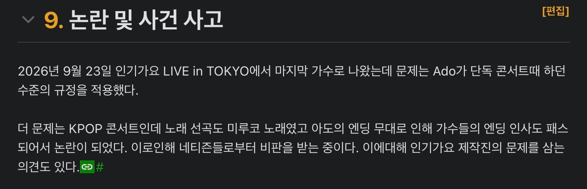
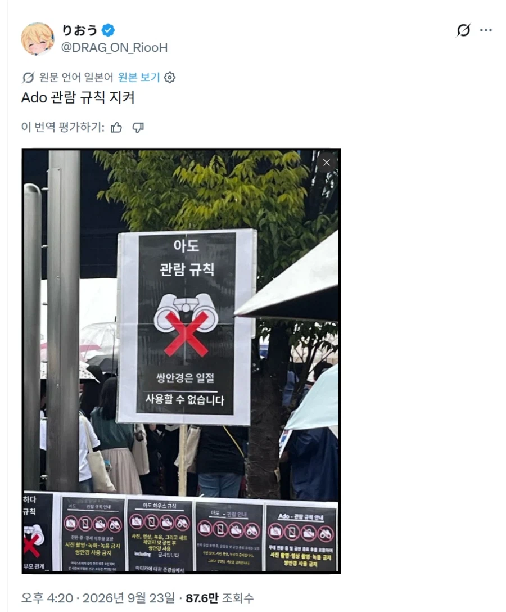
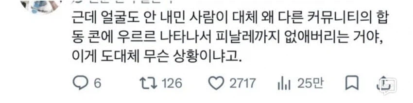
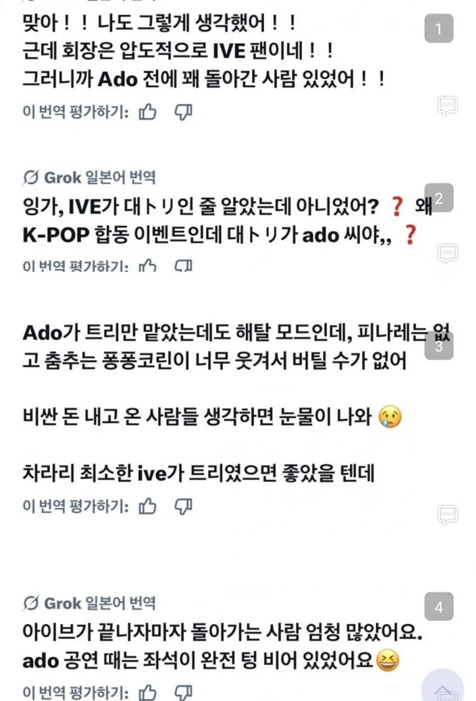
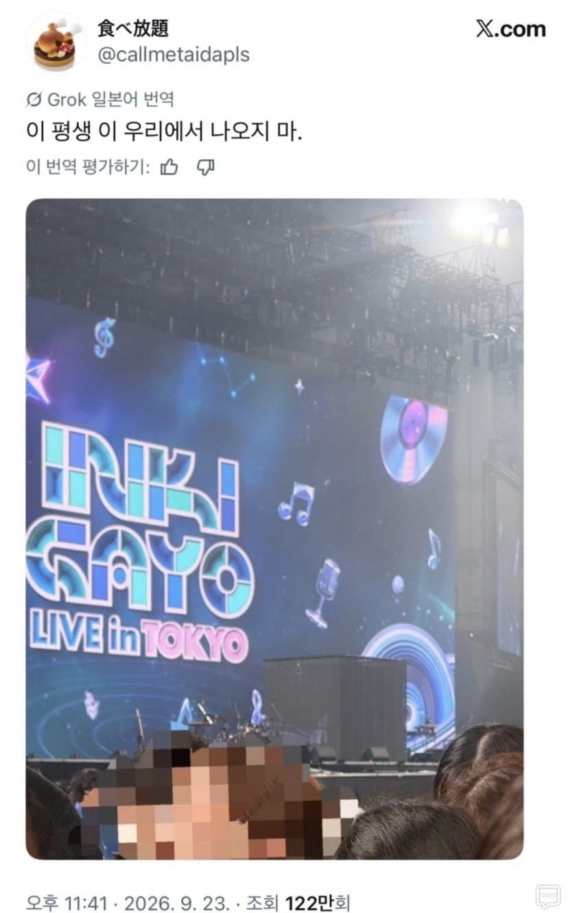

ㅊㅊ https://m.ruliweb.com/best/board/300143/read/76790561
'아도'라고 우타이테 쉽게 말해 얼굴 없는 가수 컨셉인 일본 가수가 있는데
얘 콘서트 규정이 사진촬영이나 망원경으로 아도 모습을 찍거나 보면 안되는게 있는데
이걸 엊그제 도쿄에서 열린 인기가요에서도 그 규정 적용했나봐
심지어 순서도 맨 마지막으로 배치하는 바람에 참여한 아이돌들 피날래 못하게 해서 k-pop팬들은 개빡치고
아도 팬들은 아도 무대에 아이돌들 팬들 쭉 나가 버리니깐 그거 때문에 난리 난 듯?
나도 개드립 간글 보고 서칭한거라 틀릴 수도 있음
잘 몰라서 그러는데 얼굴없는 가순데 직접 나와서 노래를 부름? 그럼 얼굴에 탈쓰고 나오는거야?